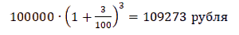
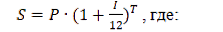
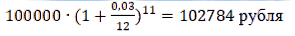
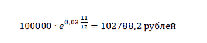

Сложные проценты
Сложный процент – это процент, который рассчитывается от первоначальной суммы, затем к ней присоединяется, далее рассчитывается уже от новой суммы с учетом ранее начисленного дохода и так далее до окончания расчетного периода. В банковской сфере такой процесс называется капитализацией.
В 1-й год маленькая сумма прирастает маленьким доходом. На 2-й год доход будет начислен уже на “Сумма + Доход за 1-й год”, на 3-й – “Сумма + Доход за 1-й и 2-й годы” и т. д. Покажу на простом примере. Цифры условные, даны для простоты понимания процесса, к реальным депозитам не имеют никакого отношения.
Вы положили на счет 10 000 ₽ под 10 % годовых. Через год сняли 11 000 ₽. А теперь допустим, что не сняли, а оставили на счете под те же 10 % годовых. Только уже 11 000 ₽. На них через год банк начисляет еще 10 %. И вот вы уже видите на счете 12 100 ₽. Забегая вперед, скажу, что через 10 лет будет 25 937,42 ₽, а через 40 лет – 452 592,56 ₽. Заметьте, что вы ничего не делаете, просто не снимаете деньги.
Цифры увеличиваются в разы, если вы регулярно пополняете счет, но об этом еще впереди и обязательно на примерах.
Сложный процент с начислением дохода 1 раз в год
S – общая накопленная сумма на конец периода с процентами
P – сумма первоначальных вложений
I – годовая ставка (%)
T – срок вложения в годах
Следовательно, если вкладчик внесет на депозит 100 000 рублей сроком на 3 года под 3% годовых, то его процентный доход составит:
Рассмотрим случаи со сложным процентом с начислением дохода чаще, чем 1 раз в год. Можно выделить несколько ситуаций с начислением дохода чаще 1 раза в год:
1. Сложный процент с начислением дохода ежедневно В такой ситуации необходимо воспользоваться формулой:
S – общая накопленная сумма на конец периода с процентами
P – сумма первоначальных вложений
I – годовая ставка (%), разделенная на 100
T – срок вложения в днях
N – количество дней в году (365 или 366)
2. Сложный процент с начислением дохода ежемесячно Формула в таком случае схожа с начислением дохода ежедневно:
S – общая накопленная сумма на конец периода с процентами
P – сумма первоначальных вложений
I – годовая ставка (%), разделенная на 100
T – срок вложения в месяцах
Если вкладчик внесет на депозит 100 000 рублей сроком на 11 месяцев под 3 % годовых, то его процентный доход составит
3. Сложный процент с начислением дохода ежеквартально Для расчета берется формула
S – общая накопленная сумма на конец периода с процентами
P – сумма первоначальных вложений
I – годовая ставка (%), разделенная на 100
T – срок вложения в кварталах
Если вкладчик внесет на депозит 100 000 рублей сроком на 11 месяцев (3,667 квартала) под 3 % годовых, то его процентный доход составит:
4. Непрерывное начисление процентов При непрерывном начислении процентов берется формула:
S – общая накопленная сумма на конец периода с процентами
e – экспонента (≈2,718)
I – ставка непрерывных процентов (%), разделенная на 100
T – срок вложения
P – сумма первоначальных вложений
Если вкладчик внесет на депозит 100 000 рублей сроком на 11 месяцев под 3 % годовых, то его накопления через 11 месяцев составят:
Ключевые параметры, влияющие на результат расчетов
Сумма, которую получит вкладчик или инвестор в конце расчетного периода, зависит от ряда ключевых параметров:
1. Процентная ставка – доходность, которую вы получаете от вложения своих средств в тот или иной инструмент, или плата за использование “чужих” денег (например, кредит). Чем выше %, тем больше вы заработаете или заплатите.
2. Расчетный период – срок (дни, месяцы, годы), в течение которого планируется получать доход или расплачиваться за кредитные средства. Чем он выше, тем больше будет накопленная или выплаченная кредиторам сумма.
3. Стартовый капитал – сумма, которую вы первоначально выделили для накопления или получили в кредит.
4. Частота дополнительных взносов.На коротком промежутке времени эффект от дополнительно внесенных на счет сумм незначительный. Снежный ком начинает расти заметными темпами с 5–7-го года накопления или погашения.
5. Частота начисления % – ежедневно, ежемесячно, ежеквартально или ежегодно. Чем чаще, тем выше скорость наращения суммы.
Сложный процент работает не только в банковской, но и в инвестиционной сфере. Если в банках процесс начисления процентов на проценты называют капитализацией, то в инвестициях – реинвестированием, т. е. повторным инвестированием. Но суть остается одинаковой.
Долгосрочные инвесторы хорошо знакомы с механизмом сложных % и стараются его использовать по максимуму. Рассмотрим, как он работает в различных инвестиционных инструментах.
Облигации
Доходность облигации складывается из двух источников – рост котировок и купоны. Последние выплачиваются в виде % от номинала ценной бумаги. Как правило, раз в полгода.
Эффект сложного процента можно наблюдать на купонных выплатах, но только в одном случае – если вы полученную прибыль не тратите на текущее потребление, а повторно вкладываете в инвестиции, т. е. реинвестируете. Понятно, что на доход от одной облигации мало что можно купить. Но если ценных бумаг несколько десятков или сотен, то сумма достаточна для покупки еще нескольких облигаций.
Например, владелец одной ОФЗ-26212-ПД 2 раза в год будет получать по 35,15 ₽. За год заработает 70,3 ₽. На эти деньги нельзя купить новую ОФЗ. Если облигаций не одна, а, например, 50 штук, то за год доход составит 3 515 ₽. Можно купить еще 3 ОФЗ за 1 085,81 ₽/шт. (котировка на 27.10.2020)
Если вы не держите облигацию до погашения, а пытаетесь заработать на росте котировок, то и в этом случае полученную прибыль от перепродажи лучше реинвестировать для включения механизма сложных %.
Акции
Точно такой же эффект, как описанный в предыдущем примере, может давать реинвестирование дохода от акций в покупку новых акций. Для этого полученные дивиденды не надо выводить со счета, а повторно инвестировать.
Не все эмитенты выплачивают дивиденды. Некоторые инвесторы покупают в свои инвестиционные портфели акции роста, т. е. бумаги, которые в перспективе могут вырасти в цене. Купил дешевле, продал дороже – одна из стратегий инвестирования. Сложный % заработает, если на полученную прибыль от перепродажи увеличится капитал в инвестициях, а не количество вещей в гардеробе.
Аналогично механизм “снежного кома” работает и с другими инструментами инвестиций. Эффект можно усилить, если инвестировать на ИИС, тогда каждый возврат подоходного налога (максимум 52 000 ₽ в год) необходимо опять возвращать на брокерский счет и покупать ценные бумаги.
Пример 1.
Необходимо рассчитать, сколько денег нужно накопить, чтобы жить на пассивный доход через какое-то количество лет. Допустим, мы хотим на пенсии ежемесячно получать 50 000 ₽. Учтем инфляцию 4 %.
Ставку доходности примем равной 10 %. Ее размер зависит от состава инвестпортфеля. Если решили копить в облигациях, то закладывать надо меньший %. Если составить сбалансированный портфель из разных инструментов (например, ETF, акции и облигации отдельных эмитентов, золото), то 10 % – очень консервативная оценка. На практике получается значительно больше.
Расчет без учета инфляции: (50000∙12 месяцев) / 0,1 = 6 000 000 ₽. Для учета инфляции воспользуемся онлайн-калькулятором. Необходимо накопить уже 10 000 000 ₽.